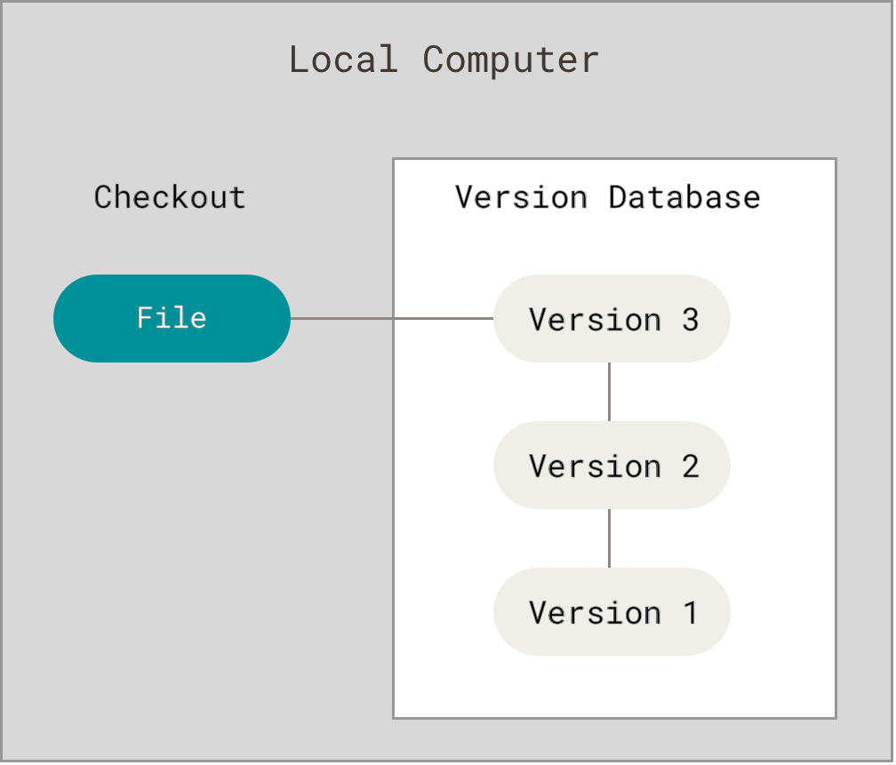
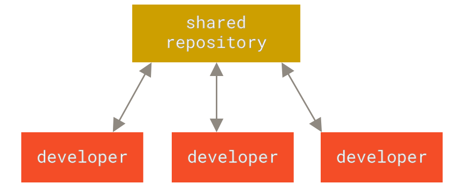
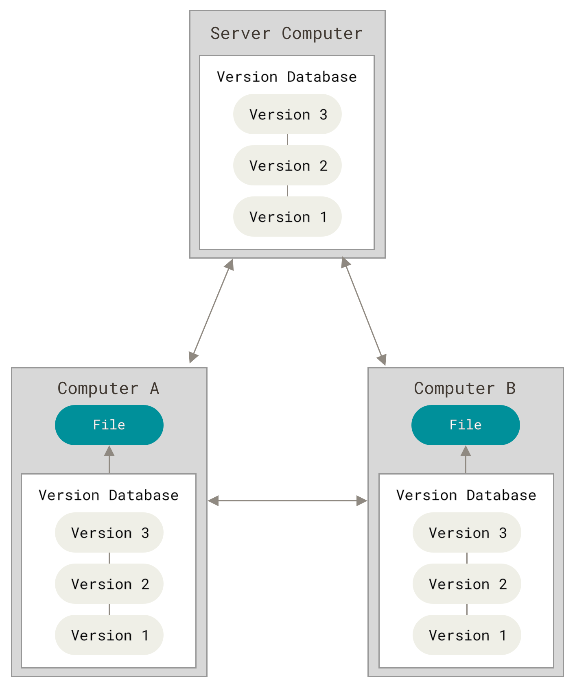

1.1 はじめよう-バージョン管理について
この章から Git をはじめていきます。 まずはバージョン管理ツールのこれまでについて説明します。 次にシステム上で Git を動かす方法、作業を進めていくにあたってのセットアップ方法を示していきます。 この章を読み終えたときには、なぜ Git が活用されているのか、なぜこれを使うのがよいのか理解できていて、すぐに作業に取りかかれるはずです。
バージョン管理について
「バージョン管理 (version control)」とは何でしょう？ なぜ気にする必要があるのでしょう？ バージョン管理とは、ファイルに対してある程度の期間にわたって、変更内容を記録するためのシステムです。 これにより、いつでも特定の時期のバージョンを取り出すことができます。 本書では、ソフトウェアのソースコードをバージョン管理していく例を取り上げますが、実際にはコンピューター上にて扱う、どのような種類のファイルでも対象とすることができます。
あなたがグラフィックデザイナーかウェブデザイナーであるとして、画像やレイアウトのあらゆるバージョンを管理したいとします。 (そういったものこそ、管理したいのが実際でしょう。) こういうときには、バージョン管理システム (Version Control System; VCS) を選ぶのが賢明です。 これを使うと、ファイルの状態を以前のものに戻すことができます。 プロジェクト全体を戻すこともできます。 いつの時点のものであっても違いを比較することができます。 問題が発生したときには、最後に修正した人がだれであるか、だれが問題を引き起こしたかも確認できます。 できることは、まだまだあります。 VCS を使えば、仮にファイルがめちゃくちゃになってしまったり、失ってしまっても、簡単に元に戻すことができます。 しかもこういった作業は、たいした手間をかけずにできることです。
ローカル型のバージョン管理システム
バージョンを管理するというので、ファイルを別のディレクトリにコピーする方法を行うことがよくあります。 賢い方は日時を含めたディレクトリ名を用いるでしょう。 このやり方はよく行われますが、なぜかと言えば簡単にできるからです。 ただ一方で、誤りが必ず起きるやり方でもあります。 今どのディレクトリにいるのかなんて、すぐ分からなくなります。 うっかりして別のファイルを書き換えてしまったり、そのつもりがないのにファイルを上書きコピーしてしまうこともあります。
こういった問題点を克服しようと、かつてのプログラマーがローカル型の VCS というものを開発しました。 このシステムには単純なデータベースがあり、ファイルに対しての変更をすべてリビジョン管理 (revision control) という形により記録していました。

図 1. ローカル型バージョン管理
かつて人気を博した VCS ツールとして RCS というものがあります。 このシステムは今でも、各種コンピューター向けに提供されています。 RCS ではパッチセット (つまりファイルの変更差異を表わすもの) を、独自のフォーマットにより保持しながら動作します。 どのファイルであっても過去のどの時点でも、そのパッチを重ね合わせて適用することで再生成できるようになっています。
集中型バージョン管理システム
開発者にとって次に問題となってきたのが、他のメンバーが別のマシン上で作業しつつ、しかも共同で作業を進める必要がでてきたことです。 これに対処するために、集中型バージョン管理システム (Centralized Version Control System; CVCS) が開発されました。 CVS、Subversion、Perforce というものがこれにあたります。 このシステムには 1 つのサーバーがあって、バージョン管理されたファイルが収められています。 中心となるサーバーにはクライアントが多数接続し、各ファイルをチェックアウトして利用します。 しばらくの間は、このバージョン管理が標準的なものとなっていました。

図 2. 集中型バージョン管理
このシステムの仕組みは、特にローカル型の VCS に比べて、優れている点が数多くあります。 そもそもプロジェクトのメンバーは、他のメンバーが何をしているのか、ある程度知っています。 そして管理者は、だれに何をさせるかも細かく管理しているものです。 そうなると各クライアントにローカルなデータベースがある状況に比べて、CVCS を管理することの方がはるかに簡単なことです。
しかしこのシステムには重大な欠点もあります。 明らかな欠点は、中心に位置づけられたサーバーが存在するという、この単純な構成です。 このサーバーが 1 時間でも停止したら、その間だれも共同作業ができませんし、作業中のファイルをバージョン管理のもとに保存することもできません。 サーバーのハードディスク内にあるデータベースが壊れてしまって、それまでに適切にバックアップをとっていなかったとしたら、完全にすべてを失ってしまうということです。 プロジェクトの履歴は全く失われてしまい、だれかがたまたまローカルマシン内に保持していたスナップショットが残る程度です。 ローカル型の VCS でも同じことです。 つまりプロジェクトの履歴は、一箇所に管理している限りは、消失するリスクを抱えているということです。
分散型バージョン管理システム
ここに分散型バージョン管理システム（Distributed Version Control System; DVCS）が登場します。 DVCS である Git、Mercurial、Bazaar、Darcs などにおいて、クライアントはファイルの最新スナップショットを単に取得するものではありません。 クライアントはリポジトリの完全なミラーを行います。 したがってサーバーがダウンしてしまい、そこに DVCS が稼動していた場合でも、クライアントにあるリポジトリのどれか 1 つをサーバーにコピーし直せば復旧ができます。 クローンの作成というものは、まさに全データのバックアップを取ることなのです。

図 3. 分散型バージョン管理
さらに言えばこういったシステムには、リモートリポジトリと協調しながら動作する機能が含まれているものが多いので、他の人たちがまるっきり違った方法で行っている作業であっても、共に同一プロジェクト内で、同時に作業を進めることもできます。 こういうシステムであればこそ階層モデルのように、いろいろな種類の作業を組み立てられるのであって、これは集中型システムでは無理です。